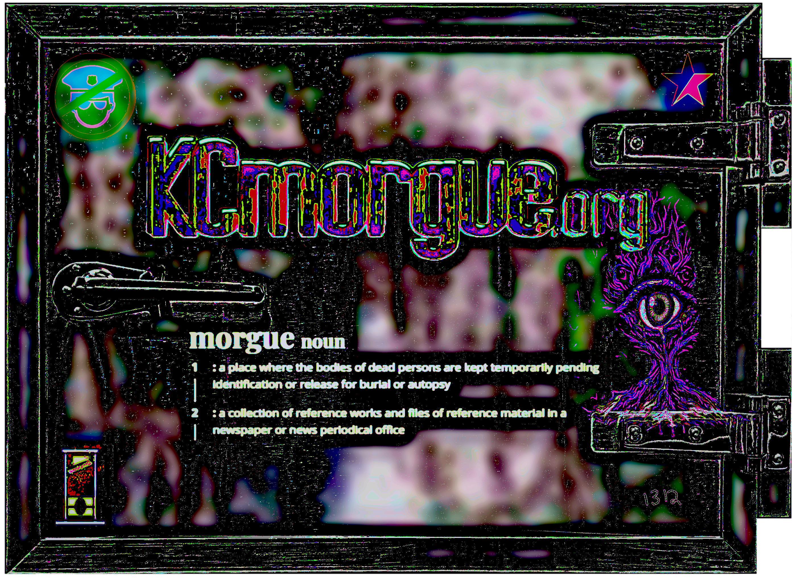

THE POLICE ARE MURDERERS

Morgue
Noun (ˈmȯrg)
- A place where the bodies of dead persons are kept temporarily pending identification or release for burial or autopsy.
- A collection of reference works and files used as a resource, particularly in a newspaper or news service office.